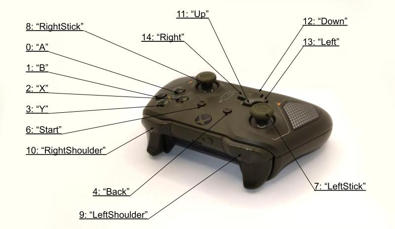

The Input system is inherited from the original implementation in Urho3D game engine.
The Input subsystem provides keyboard, mouse, joystick and touch input both via a polled interface and events. This subsystem is also used for querying whether the application window has input focus or is minimized.
The subsystem is always instantiated, even in headless mode, but is active only once the application window has been created. Once active, the subsystem takes over the operating system mouse cursor. It will be hidden by default, so the UI should be used to render a software cursor if necessary. For editor-like applications the operating system cursor can be made visible by calling SetMouseVisible().
The input events include:
- E_MOUSEBUTTONUP: a mouse button was released.
- E_MOUSEBUTTONDOWN: a mouse button was pressed.
- E_MOUSEMOVE: the mouse moved.
- E_MOUSEWHEEL: the mouse wheel moved.
- E_KEYUP: a key was released.
- E_KEYDOWN: a key was pressed.
- E_TEXTINPUT: a string of translated text input in UTF8 format. May - contain a single character or several.
- E_JOYSTICKCONNECTED: a joystick was plugged in.
- E_JOYSTICKDISCONNECTED: a joystick was disconnected.
- E_JOYSTICKBUTTONDOWN: a joystick button was pressed.
- E_JOYSTICKBUTTONUP: a joystick button was released.
- E_JOYSTICKAXISMOVE: a joystick axis was moved.
- E_JOYSTICKHATMOVE: a joystick POV hat was moved.
- E_TOUCHBEGIN: a finger touched the screen.
- E_TOUCHEND: a finger was lifted from the screen.
- E_TOUCHMOVE: a finger moved on the screen.
- E_GESTURERECORDED : recording a touch gesture is complete.
- E_GESTUREINPUT : a touch gesture was recognized.
- E_MULTIGESTURE : a multi-finger pinch/rotation touch gesture is - underway.
- E_DROPFILE : a file was drag-dropped on the application window.
- E_INPUTFOCUS : application input focus or window minimization state - changed.
- E_MOUSEVISIBLECHANGED : the visibility of the operating system mouse - cursor was changed.
- E_EXITREQUESTED : application exit was requested (eg. with the window - close button.)
- E_INPUTBEGIN : input handling starts.
- E_INPUTEND : input handling ends.
- E_SDLRAWINPUT : raw SDL event is sent for customized event processing.
Here is a sample code for handling the E_MOUSEBUTTONUP event in Rebel Framework:
void HandleMouseUp(StringHash eventType, VariantMap& eventData)
{
using namespace MouseButtonDown;
const MouseButton button = static_cast<MouseButton>(eventData[P_BUTTON].GetInt());
if (button == MOUSEB_LEFT)
{
}
else if (button == MOUSEB_RIGHT)
{
}
}
SubscribeToEvent(E_MOUSEBUTTONUP, &MyApplication::HandleMouseUp);
This code subscribes to the E_MOUSEBUTTONUP event and handles it in the HandleMouseUp function. The eventData parameter contains information about the event, such as which mouse button was released. In this example, the code checks whether the left or right mouse button was released and handles it accordingly.
Input Map
The InputMap class is responsible for mapping keyboard keys, gamepad buttons, or axis movement to logical actions in a game engine. The class provides an interface for defining and managing input mappings, which can be used to trigger specific actions in the game.
The InputMap is serializable. You can define default map in game resources and override in a configuration folder. Because of that it is recommended to use the helper method to load the map:
void LoadInputMap(const ea::string& name);
The method looks up map in configuration folder first and only if it is missing there it loads one from resources.
If you have no intention to allow user to define key mappings you can fetch it from ResourceCache as any other resource.
To map a keyboard key you can use MapKeyboardKey.
map->MapKeyboardKey("Forward", SCANCODE_W);
Keyboard mapping is based on scancodes. Scancodes are unique codes assigned to each key on a keyboard. They are used to identify the physical key pressed, regardless of the keyboard layout or language. In games, scancodes are used to support international keyboard layouts by providing a consistent way to identify keys across different keyboards and languages.
For example, if a game uses the "WASD" keys for movement, it can map the scancodes for those keys to the movement action in the game. This allows players to use any keyboard layout or language and still be able to move their character using the same physical keys. For example in France, the most commonly used keyboard layout is AZERTY. It is similar to the QWERTY layout used in English-speaking countries, but with a few differences. For example, the letters A and Q are swapped, as are the letters Z and W.
To get value from the map use Evaluate method.
const float forward = map->Evaluate("Forward");
This means that the map finds a matching mapping and reads its value directly from Input system. The value returned is between 0 and 1, where 0 means the key is not pressed and 1 means the key is pressed. Some input devices have analog input, which means you can get any value between 0 and 1.
To map gamepad analog stick axis use MapJoystickAxis or MapControllerAxis method.
void MapJoystickAxis(const ea::string& action, unsigned axis, float neutral, float pressed);
void MapControllerAxis(const ea::string& action, ControllerAxis axis, float neutral, float pressed);
The method takes four parameters:
- action: A string that specifies the logical action that should be affected when the joystick axis is moved.
- axis: For generic joystick the value is an unsigned integer that specifies the joystick axis to map. For a controller the value is ControllerAxis that specifies the controller axis.
- neutral: A float value that specifies the neutral position of the joystick axis. This value should be between -1 and 1. For analog sticks it is 0. For triggers the neutral position is -1.
- pressed: A float value that specifies the position of the joystick axis when it is fully pressed. This value should be between -1 and 1. Usually the value is either -1 or 1 exactly.
The Evaluate method return value of the joystick axis is mapped to a range between neutral and pressed, where neutral represents the neutral position of the joystick and pressed represents the position of the joystick when it is fully pressed.
For example, if you want to map the Y-axis of a gamepad to control the movement of a character in your game, you can use the following code:
map->MapControllerAxis("Forward", CONTROLLER_AXIS_LEFTY, 0.0f, -1.0f);
This code maps the negative Y-axis portion of the gamepad analog stick to affect the "Forward" action in your game. The neutral position of the Y-axis is set to 0.0f, which means that when the joystick is in its neutral position, the value of "Forward" will be 0.0f. The fully pressed position of the Y-axis is set to -1.0f, which means that when the axis is fully pressed forward, the value of "Forward" will be 1.0f.
Using InputMap to control character
Because the InputMap is a SimpleResource the easiest way to use it in a component is to have an attribute of the InputMap resource type:
void KinematicCharacter::RegisterObject(Context* context)
{
URHO3D_MIXED_ACCESSOR_ATTRIBUTE(
"Input Map", GetInputMapAttr, SetInputMapAttr, ResourceRef, ResourceRef(InputMap::GetTypeStatic()), AM_DEFAULT);
}
void KinematicCharacter::SetInputMapAttr(const ResourceRef& value)
{
auto* cache = GetSubsystem<ResourceCache>();
SetInputMap(cache->GetResource<InputMap>(value.name_));
}
ResourceRef KinematicCharacter::GetInputMapAttr() const
{
return GetResourceRef(inputMap_, InputMap::GetTypeStatic());
}
void KinematicCharacter::SetInputMap(InputMap* inputMap)
{
inputMap_ = inputMap;
}
The InputMap is stateless and because of that it doesn't require any special handling.
When you need to get a value for an action just call Evaluate method. In the following example if Crouch action value is not equal to 0 then the character height is halved:
if (inputMap_->Evaluate("Crouch"))
{
kinematicController_->SetHeight(0.9f);
kinematicController_->SetOffset(Vector3(0.0f, 0.45f, 0.0f));
}
else
{
kinematicController_->SetHeight(1.8f);
kinematicController_->SetOffset(Vector3(0.0f, 0.9f, 0.0f));
}
InputMap file format
InputMap is a SimpleResource and by default is serialized in a JSON format:
{
"actions": [
{
"key": "Left",
"value": {
"axes": [
{
"controller": true,
"pressed": -1.0
}
],
"keys": [
{
"scancode": "A"
},
{
"scancode": "Left"
}
]
}
},
{
"key": "Right",
"value": {
"axes": [
{
"controller": true
}
],
"keys": [
{
"scancode": "D"
},
{
"scancode": "Right"
}
]
}
}
]
}
The InputMap JSON file contains an array, each of which has a key and a value field. The key field is a string that represents the name of the action, while the value field is an object that contains several fields:
"axes": [
{
"axis": 3,
"controller": true,
"neutral": 0.0,
"pressed": 1.0,
}
]
- axes: The axes field is an array of objects that represent the controller’s axes mapping. Each object in the array has few fields
- controller which is a boolean value indicating whether the axis is controlled by a controller. False indicates that the mapping is for generic joystick and true indicates mapping for a gamepad detected by SDL. Default value of the field is false.
- axis which is an integer value indicating which axis is controlled by a controller. Default value of the field is 0.
- neutral, which is a floating-point value between -1.0 and 1.0 representing the neutral position of the axis. Default value of the field is 0.0.
- pressed, which is a floating-point value between -1.0 and 1.0 representing the fully pressed position of the axis. Default value of the field is 1.0.
"keys": [
{
"scancode": "A"
},
{
"scancode": "Left"
}
]
- keys: The keys field is an array of objects that represent the keyboard keys mapping. Each object in the array has few fields
- scancode, which is a string representing the scancode of the key. The full list of valid values would be too long and you can find it in the InputMap.cpp source file. Here are few notable mentions: "W", "A", "S", "D", "Left", "Right", "Down", "Up", "Escape", "Space".
"buttons": [
{
"controller": true,
"button": "X"
}
]
- buttons: The buttons field is an array of objects that represent the controller button mappings. Each object in the array has few fields
- controller which is a boolean value indicating whether the axis is controlled by a controller. False indicates that the mapping is for generic joystick and true indicates mapping for a gamepad detected by SDL. Default value of the field is false.
- button, for a controller the field contains button name and for generic joystick the field contains integer index of the button. Valid controller button names are "A", "B", "X", "Y", "Back", "Guide", "Start", "LeftStick", "RightStick", "LeftShoulder", "RightShoulder", "Up", "Down", "Left", "Right", "Misc1", "Paddle1", "Paddle2", "Paddle3", "Paddle4", "Touchpad". Default value of the field is "A" or 0.

XBox Gamepad Button Map
"hats": [
{
"hat": "Down"
}
]
- hats: The field is an array of objects that represent DPad mappings.
- hat, which is a string representing DPad direction. Valid values are "Up", "Right", "Down", "Left". Default value of the field is "Up".
"mouseButtons": [
{
"button": "Right"
}
]
- mouseButtons: The field is an array of objects that represent mouse button mappings.
- button, which is a string representing mouse button. Valid values are "Left", "Middle", "Right", "X1", "X2". Default value of the field is "Left".
"screenButtons": [
{
"elementName": "Button1"
}
]
- screenButtons: The field is an array of objects that represent screen button mappings.
- elementName, which is a string representing UI UIElement id.